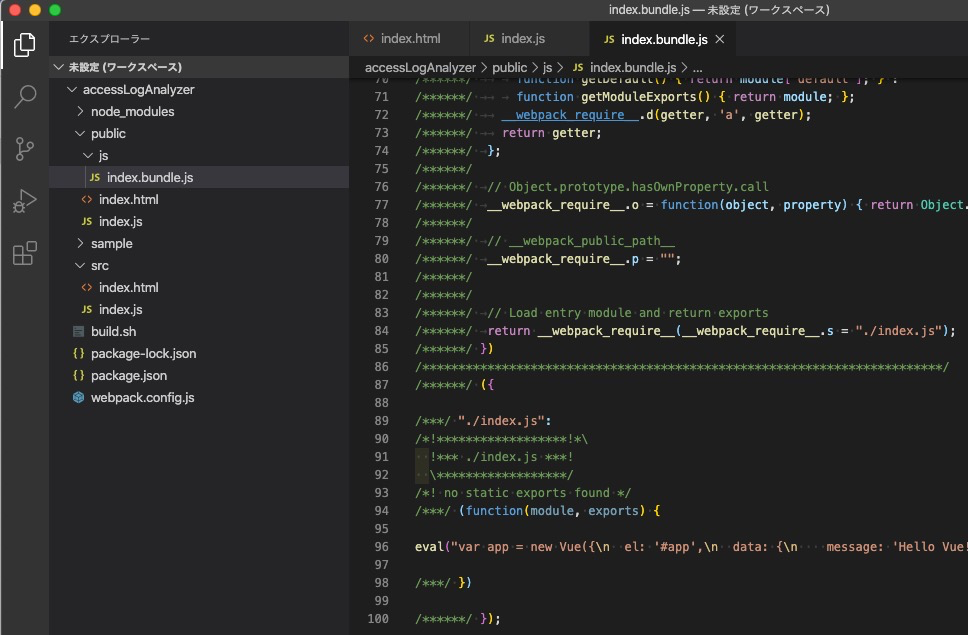

はじめに
本稿で取り扱う内容は、本来であればvue-cliを使うべきです。 ですが、公式でも初めてのvueにおいては以下のように言及があり、使用に慎重になるべきです。
CLI は Node.js および関連するビルドツールに関する事前知識を前提としています。Vue またはフロントエンドビルドツールを初めて使用している場合、CLI を使用する前に、ビルドツールなしでガイドを参照することを強くお勧めします。
確かにその通りではありますが、それはvue-cliによって余りに多くの仕組みが導入されてしまうことにあるからであって、vueを習得する上で永遠をindex.htmlだけを編集し続けていても、結局vueを知って欲しいという書き手の思いだけが達成されるだけで、我々にはその次のステージへ進むタイミングで同じ課題は生じるわけです。
また、何か公式ガイド以外モノを参考にしようとした時に、きっとこの教えを守って1ファイルだけで実践している例などは掲載されておらず、成長の妨げにすらなり得ます。(正直、詰んでるんですけど？ってことに)
npmによるパッケージインストールとビルド環境の構築
ということで、当サイトとしてはソースコードを書いて動作を確認するという部分(ビルドするという部分)においては、先取りしてしまいます。
npm コマンドによる初期設定
まずはnpmコマンドで自分自身を定義します。といっても全てEnterキーの連投でOKです。 あとから変えることも出来ますし、今回はこの記事に沿って体験するだけが目的かと思いますので、是非連投で。
実行コマンド
npm init
実行例
MacBookPro:accessLogAnalyzer $ npm init
This utility will walk you through creating a package.json file.
It only covers the most common items, and tries to guess sensible defaults.
See `npm help json` for definitive documentation on these fields
and exactly what they do.
Use `npm install <pkg>` afterwards to install a package and
save it as a dependency in the package.json file.
Press ^C at any time to quit.
package name: (accessloganalyzer)
version: (1.0.0)
description:
entry point: (index.js)
test command:
git repository:
keywords:
author:
license: (ISC)
About to write to /Users/kazuto/git/accessLogAnalyzer/package.json:
{
"name": "accessloganalyzer",
"version": "1.0.0",
"description": "",
"main": "index.js",
"scripts": {
"test": "echo \"Error: no test specified\" && exit 1"
},
"author": "",
"license": "ISC"
}
Is this OK? (yes)
MacBookPro:accessLogAnalyzer $
いよいよnpmによる最低限のパッケージのインストールです。残念ながらこれらのパッケージがどのように選定されたのか、どうやれば選定が可能になるのかは一通り経験して(1周回って)思い返してみるくらいしか思い当たりません。そして、実際にはこれらは真のミニマムではありません。あるところで私が勝手に線引きしたに過ぎません。
まずは開発で最低限必要なモノをインストールします。
npm install -D @babel/core @babel/preset-env babel-loader css-loader file-loader vue-loader vue-template-compiler webpack webpack-cli
それからVueそのものです。(こちらは実際に使うのは少し先のステップです)
npm install vue
WebPackの設定
WebPackの設定ファイルを作成します。
ファイル名: webpack.config.js
const path = require('path')
const { VueLoaderPlugin } = require('vue-loader')
const baseDir = __dirname;
module.exports = {
mode: 'development',
context: path.resolve(baseDir, './src'),
output: {
path: path.resolve(baseDir, './public/js'),
filename: '[name].bundle.js'
},
entry: {
index: './index.js',
// admin: './admin.js'
},
module: {
rules: [
{
test: /\.css$/,
use: ["vue-style-loader", "css-loader"]
},
{
test: /\.vue$/,
loader: "vue-loader"
},
{
test: /\.js$/,
loader: 'babel-loader',
options: {
presets: [
'@babel/preset-env',
]
}
},
]
},
resolve: {
alias: {
'vue$': 'vue/dist/vue.esm.js'
},
extensions: ['*', '.js', '.vue', '.json']
},
plugins: [
new VueLoaderPlugin(),
],
};
お試しでビルドしてみます。
コマンド
./node_modules/.bin/webpack
実行例
MacBookPro:accessLogAnalyzer $ ./node_modules/.bin/webpack
Hash: f568a6fbd7b410d45355
Version: webpack 4.42.1
Time: 599ms
Built at: 2020-04-05 4:31:37 PM
Asset Size Chunks Chunk Names
index.bundle.js 3.83 KiB index [emitted] index
Entrypoint index = index.bundle.js
[./index.js] 78 bytes {index} [built]
MacBookPro:accessLogAnalyzer $

無事にpublic/jsにJavaScriptが出力されましたでしょうか。 ただ、いまのHTMLはこの新たに出力されたJavaScriptを使用するようにはなっていません。
そこで、public/index.htmlを以下のように修正します。
変更前 <script src="/index.js"></script>
変更後 <script src="/js/index.bundle.js"></script>
ついでに、間違いがあるとやっかいなのでpublic/index.jsも削除しておいた方が良いでしょう。 ついでのついでですが、build.shも不要のはずです。
さてこの変更によって正常に動作しましたでしょうか。ここでhttp-serverを再始動するのを忘れないでください。 結果の見た目は何も変わらないはずですので動作結果の掲載は割愛します。
編集するのはsrc配下のみにしよう
先ほどはsrc/index.htmlではなくpublic/index.htmlを編集しました。これは現時点ではsrc/index.htmlを編集してもbuild.shの力を借りなければpublic配下に反映できなかったからです。
そこで、その作業についてもwebpackに担わせます。webpackには様々なプラグインがあり、その1つを使ってコピーというものです。そのため出来ることは実際には対したことは無いのですが、意味も分からず設定まで自動生成されて与えられると、拒絶反応も手伝って、とても理解しがたいモノです。ですが飲み込めさえすればチョロいもんで、一度動くのを見届ければあとは忘れてしまって良いので是非この機会に。
まずは、npmコマンドでパッケージをインストールします。
npm install -D copy-webpack-plugin
設定ファイルの頭でplug-inを読み込みます。 先頭のお仲間のところへ上記の行を追記してください
ファイル名: webpack.config.js
const CopyWebpackPlugin = require('copy-webpack-plugin')
実際の設定の部分は以下の通りです。名前のとおりプラグインなので、pluginsに設定を記載します。 ただただプラグインの引数にfromとtoを列挙していくだけで、コピーが実行されます。 toにはpathを使用しているので少し直感的ではないかも知れませんが、baseDir + publicディレクトリへコピーするようにしているだけなので、あまり突っかからずに変な書き方だなくらいでスルーするのが得策かと思います。
new CopyWebpackPlugin([
{
from: '*.html',
to: path.resolve(baseDir, './public')
},
{
from: '*.css',
to: path.resolve(baseDir, './public')
},
{
from: './images/*',
to: path.resolve(baseDir, './public')
},
]),
さて、HTMLを変更します。 {{ message }} の行の頭にmessage:を追加しています
ファイル名: src/index.html
<body>
<div id="app">
message: {{ message }}
</div>
<script src="/js/index.bundle.js"></script>
</body>
実際に動作するか確認してみます。
次に、まだHTMLのheaderタグ内でscriptタグを使ってVueを読み込んでいますが、これも止めてみましょう。 説明のためにコメントアウトにしていますが、実際には行を削除するので問題ありません。それから変更が効いていることを確認できるように{{ message }} の部分にも何らか文字列を追加しておきます
ファイル名: src/index.html
<html>
<head>
<title>vue.js hello Vue! </title>
<!-- <script src="https://cdn.jsdelivr.net/npm/vue/dist/vue.js"></script> -->
</head>
<body>
<div id="app">
message from Vue: {{ message }}
</div>
<script src="/js/index.bundle.js"></script>
</body>
</html>
代わりにJavaScript側でVueを読み込みます。大分最初の方でvueをnpmでインストールしていましたがようやく出番です。 追加するのはimport文の行です
ファイル名: src/index.js
import Vue from 'vue'
var app = new Vue({
el: '#app',
data: {
message: 'Hello Vue!'
}
})
いかがでしょうか。実際に確認できましたでしょうか。
ここまでで、ようやくnpmでインストールしたVue開発環境が一旦整いました。
http-serverを卒業し、お気楽ご気楽webpack-dev-serverへ
これまで変更するたびに毎回http-serverを再起動してきました。これはとても面倒な話です。 なんだかシステムに人間様が使われているようでいい気はしません。 そこで、自動的に変更を検出して反映されるようにします。
npm install -D webpack-dev-server
npm install -D write-file-webpack-plugin
ファイル名: package.json
"dev": "NODE_ENV=development webpack-dev-server --config ./webpack.config.js --content-base ./public/ --http"
ファイル書き込みが可能になるプラグインを導入します。
ファイル名: webpack.config.js
const WriteFilePlugin = require('write-file-webpack-plugin')
ファイル名: webpack.config.js
new WriteFilePlugin(),

これで編集した内容が即座にビルドされて、かつWebブラウザも自動でリロードされたと思います。
単一ファイルコンポーネント
最後に一仕事です。「単一ファイルコンポーネント」それが我々の目指すところです。いつの間にそうなった？？
まだHTMLと(Vueを使った)JavaScriptという構図で、ファイルの成り立ち的にはちっともVueっぽさが出ていません。やっぱり、vue拡張子を持ったファイルを更新して、ビルドすると自動的にHTML、CSS、JSという標準的なファイル構成から全体が出来上がっているのが理想でしょう。(勝手な思い込み)
いまだメッセージの文字列をvueで指定することしか出来ていませんが、「単一ファイルコンポーネント」という仕組みを手に入れたいと思います。
単一ファイルコンポーネントとは
まずは単一ファイルコンポーネントとは何かです。
こういうのが単一ファイルコンポーネントです。大きく、template、script、styleという3部構成になっています。実はこれ、HTMLファイルの中にもHTMLのHTML部分とJavaScirptやStyle Sheetの中身を書き込めるのでそんなに突飛な考え方でもありません。
- template ・・・デフォルトの言語はHTMLです。それぞれのファイルに最大で1つだけ設けることが出来ます。
- script ・・・デフォルトの言語はJavaScirptです。本稿ではBabelを採用しているので、ES2015+
名前にコンポーネントと書かれているのがミソで、
App.vue
Header.vue
Information.vue
IconMenu.vue
Main.vue
LeftContent.vue
Menu.vue
CenterContent.vue
SerachBar.vue
Result.vue
Detail.vue
RightContent.vue
Tools.Vue
Advertisement.Vue
Footer.vue
StaticLink.vue
CopyRight.vue
これらは全て妄想でデタラメ(それっぽくパーツに分解したもの)ですが、画面の領域毎にコンポーネント化してそれぞれの部分に対してHTMLとロジック、それにスタイルを実装することで、見通しがよく、分担して開発することも可能で、プログラミングの影響範囲も分かりやすくなります。そして別の画面を作る時に再利用も可能となります。
本稿では、まずApp.vue体制に移行します。その上で、App.vueの子としてMessage.vueを追加します。
ようこそApp.vue
ではまずHTMLからです。
{{ message }} は App.vueの役割なのでここではVueに任せる部分の起点だけを記すことになります。 idがappのdivタグです
ファイル名: src/index.html
<html>
<head>
<title>vue.js hello Vue! </title>
</head>
<body>
<div id="app"></div>
<script src="/js/index.bundle.js"></script>
</body>
</html>
次にJavaScriptです。
この変更を行ったあとビルドはエラーになります。これはまだ他のファイルを変更する必要がありますが、ファイルの変更を自動で検出してコンパイルしてしまうためです。
変更の内容は、App.vueというファイルでVueのコンポーネントを作ってそれをindex.htmlの起点部分でレンダリングするというものです。
ファイル名: src/index.js
import Vue from 'vue'
import App from './components/App.vue';
new Vue({
el: '#app',
render: h => h(App),
})
最後にVueファイルです。
templateは、これまでindex.htmlで記載していた内容と同じで、少しだけ違うのはstyleを付けたことくらいでしょうか。それっぽくstyleにも何か書いてみただけです。
ファイル名: src/compoment/App.vue
<template>
<div class="message">
{{ message }}
</div>
</template>
<script>
export default {
data() {
return { message: "message from vue" }
},
}
</script>
<style scoped>
.message {
color: red;
}
</style>
さて、肝心のscript部分ですが、これは書き方が決まっています。export default {} で囲われた所にvueとして決められたモノを書いていくことになります。
index.htmlとindex.jsの時には、data: { message: ‘Hello Vue!’ } こんな感じで書いていたと思いますが、それが関数になります。なんだdata: じゃないじゃないかと思われるようでしたら、data: function(){} として頂いても構いません。
さて、実際に動作しましたでしょうか。
これで終わってしまうと、1世代だけで、その子を産み、育てるにはどうするんだよってことになりますので、そこまでやりましょう。
ファイル名: src/App.vue
<template>
<div class="message">
{{ message }}
<Message></Message>
</div>
</template>
<script>
import Message from "./util/Message.vue"
export default {
data() {
return { message: "message from vue" }
},
components: {
Message,
}
}
</script>
<style scoped>
.message {
color: red;
}
</style>
ファイル名: src/components/util/Message.vue
<template>
<div class="child">
child: {{ message }}
</div>
</template>
<script>
export default {
data(){
return {
message: "message from mesage.vue"
}
}
}
</script>
<style scoped>
.child {
background-color:bisque;
}
</style>
動作を確認してみましょう。
ついに、index.htmlとindexjsを形式上設け、あとはApp.vueとその仲間たちという形でどんどんVueな世界を展開していけばOKな状態を手に入れました。Vueとして開発することで、どんどん画面が出来上がっていく構図を手に入れました。
ようやくスタートラインに立てましたね！
これさえ手に入れれば、あとは好きな教材でVueを学びながら、初めての試作アプリという形で経験を積めば、立派なVue使いになれるはずです。まだ一緒に学びたいよ〜という方は、引き続き3.Vue.jsでアプリ開発へと進みお付き合い頂ければと思います。
comments powered by Disqus